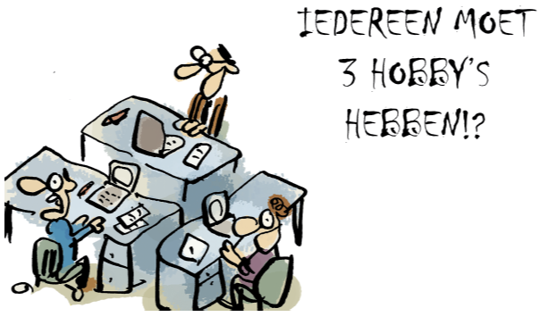

Iedereen zou eigenlijk 3 hobby’s moeten hebben. Als je dat lukt, dan zul je zien dat het heel goed met je gaat en je vol energie rondloopt. Helaas hebben veel mensen slechts 1 hobby en heel veel moetjes. Die volle agenda’s met allerlei zaken die eigenlijk niet je hobby zijn, kunnen je helaas flink leegtrekken. Maar welke 3 hobby’s zou je dan eigenlijk moeten hebben?
De eerste hobby die je moet hebben is een hobby waar je je geld mee verdient. Geld is en blijft belangrijk, dus daar kunnen we niet omheen. Kunst is dus om iets te doen wat echt je hobby is. Als je werk hebt wat echt leuk is, dan voelt het aan als een hobby. Als je met je hobby bezig bent, dan vliegt de tijd en het kost geen energie, maar levert juist energie op. Als je werk je hobby is, kom je ook een stuk prettiger en opgeladen thuis. Helaas slaagt daar slechts 15% van de Nederlanders is. Zonde eigenlijk, want dan ben je wel heel veel tijd bezig met zaken die moeten.
De twee hobby die je moet hebben is een hobby die je mentaal scherp houdt. Het menselijke reptielenbrein is van nature lui en voor je het weet stop je met leren en ontwikkelen. Onderzoek laat zien dat een brein dat op de proef wordt gesteld, gezonder is en uiteindelijk ook ouder wordt. Het is dus de kunst om jezelf regelmatig uit te dagen, te blijven leren en je te verblijven verdiepen in nieuwe onderwerpen. Zou helemaal mooi zijn als je deze hobby kunt combineren met je eerste hobby. Maar ook als je met pensioen bent, blijft deze hobby één van de belangrijkste voor een vitaal leven.
De derde hobby die je moet hebben is een hobby die goed is voor je lichaam. Denk hierbij bijvoorbeeld aan fietsen of lopen. Ga op zoek naar een hobby die ervoor zorgt dat je blijft bewegen. Of het nu kilometers lopen is om zoveel mogelijk pokemons binnen te slepen, met je mountain bike de bossen in of het lopen van prachtige wandelroutes tijdens je vakanties. Zorg ervoor dat je het leuk vindt om te bewegen, want het luie reptielen brein komt het liefst niet achter netflix vandaan.
Heb jij deze 3 hobby’s? Zou je willen dat je werk je hobby is? Denk goed na en kom in actie. Wil je in de tussentijd je werkplezier vergroten? Lees dan ons EBook Hoe ga ik met meer plezier naar mijn werk waarin je leert hoe je je gedachten en emoties onder controle krijgt. Of lees verder in het boek Ik ben er helemaal klaar mee.
Merk je dat je flink last hebt van energieverlies? Kom dan gelijk in actie en kijk naar onze mogelijkheden op het gebied van coaching.